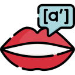

icon that appearsPhonetic Portal is a tool designed to help users understand and pronounce words using the International Phonetic Alphabet (IPA). Whether you're a linguist, language learner, or just curious about phonetics, this extension provides an easy way to convert words into their phonetic representation.
Send comments, questions, bug reports, or feature requests via the Feedback tab or on GitHub Issues.
Icons: Pronunciation icons by Freepik - Flaticon
Developers: Burak Kadir Er & Caglar Orhan